🗺️ 천천히 걸어도 안전한 길 : 고령자 접근성 온라인 지도
조회수

액티브 시니어 봉사단 노인권익증진캠페인(2025년 10월~12월)
참여자 : 곽순영, 김영호, 남상봉, 변춘희, 송금자, 유연훈, 정영이 | 서포터즈 : 김주희, 나혜원
조회수

액티브 시니어 봉사단 노인권익증진캠페인(2025년 10월~12월)
참여자 : 곽순영, 김영호, 남상봉, 변춘희, 송금자, 유연훈, 정영이 | 서포터즈 : 김주희, 나혜원
| 점검 항목 | 적합 | 미흡 |
|---|---|---|
| 외부 시설 안내 표지판이 있고 명확 | ❌ | |
| 인근 보도가 대체로 평탄하고 잘 정비되어 있음 | ✅ | |
| 출입구 단차가 없거나 완만한 경사로 설치 | ✅ | |
| 출입구·복도 휠체어 통행 가능 (1m 20cm 이상) | ✅ | |
| 장애인 화장실 및 비상벨 설치 | ✅ | |
| 복도·계단·화장실 등 안전 손잡이 설치 | ✅ | |
| (2층 이상) 엘리베이터 이용 가능 | ✅ | |
| 화장실 등 시설을 쉽게 찾을 수 있음 | ✅ | |
| 무료 무선 인터넷(WIFI) 사용 가능 | ✅ | |
| 로비 및 시설이 청결하게 관리됨 | ✅ | |
| [가점]키오스크 고령자 사용 용이 또는 보조 인력 상주 | ✅ |


| 점검 항목 | 적합 | 미흡 |
|---|---|---|
| 보행로 폭이 넓고 휠체어 통행 가능 | ❌ | |
| 보행로가 대체로 평탄하고 파손/장애물 없음 | ❌ | |
| 야간 보행을 위한 조명이 충분함 | ✅ | |
| 출입구에 턱이나 계단 없이 완만한 경사 | ✅ | |
| 벤치나 쉼터가 충분한 간격으로 설치 | ❌ | |
| 공중화장실에 장애인 칸/비상벨 설치 | ❌ | |
| 운동기구/놀이시설 안전 설명 있음 | ❌ | |
| 화장실 등 시설을 쉽게 찾을 수 있음 | ✅ | |
| 자전거와 보행로가 분리되어 안전함 | ❌ | |
| 시설 및 보행로가 청결하게 관리됨 | ✅ |
| 점검 항목 | 적합 | 미흡 |
|---|---|---|
| 외부 시설 안내 표지판이 있고 명확 | ✅ | |
| 인근 보도가 대체로 평탄하고 잘 정비되어 있음 | ✅ | |
| 출입구 단차가 없거나 완만한 경사로 설치 | ✅ | |
| 출입구·복도 휠체어 통행 가능 (1m 20cm 이상) | ✅ | |
| 장애인 화장실 및 비상벨 설치 | ✅ | |
| 복도·계단·화장실 등 안전 손잡이 설치 | ✅ | |
| (2층 이상) 엘리베이터 이용 가능 | ✅ | |
| 화장실 등 시설을 쉽게 찾을 수 있음 | ✅ | |
| 무료 무선 인터넷(WIFI) 사용 가능 | ✅ | |
| 로비 및 시설이 청결하게 관리됨 | ✅ | |
| [가점]키오스크 고령자 사용 용이 또는 보조 인력 상주 | ❌ |

| 점검 항목 | 적합 | 미흡 |
|---|---|---|
| 인근 보도가 대체로 평탄하고 보행에 방해 없음 | ❌ | |
| 출입구 단차가 없거나 완만한 경사로 설치 | ❌ | |
| 출입구·통로 등 휠체어 통행 가능 | ✅ | |
| 장애인 화장실 및 비상벨 설치 | ✅ | |
| 복도·계단·화장실 등 안전 손잡이 설치 | ❌ | |
| 엘리베이터 이용 가능 | ✅ | |
| 안내 표지판이 눈에 잘 띄고 명확함 | ❌ | |
| 화장실 등 시설을 쉽게 찾을 수 있음 | ✅ | |
| 휴식 공간(의자 등)이 충분히 배치됨 | ❌ | |
| 시설 및 보행로가 청결하게 관리됨 | ❌ |


| 점검 항목 | 적합 | 미흡 |
|---|---|---|
| 보행로 폭이 넓고 휠체어 통행 가능 | ❌ | |
| 보행로가 대체로 평탄하고 파손이나 장애물 없음 | ❌ | |
| 야간 보행을 위한 조명이 충분함 | ✅ | |
| 횡단보도에 턱이나 계단 없이 완만함 | ❌ | |
| 횡단보도에 쉴 수 있는 간이 의자 설치 | ❌ | |
| 횡단보도에 음성 안내가 잘 작동함 | ❌ | |
| 횡단보도에 비·햇빛을 피할 가림막 있음 | ✅ | |
| 버스 정류장에 비·햇빛 가림막과 벤치가 있음 | ✅ | |
| 자전거와 보행로가 분리되어 안전함 | ❌ | |
| 시설 및 보행로가 청결하게 관리됨 | ❌ |


액티브시니어 봉사단 노인인권 자료입니다. (썸네일 클릭 → 확대 / 확대 화면에서 화살표 또는 이미지 클릭으로 다음)
.jpg) 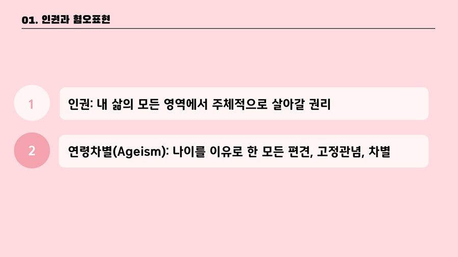
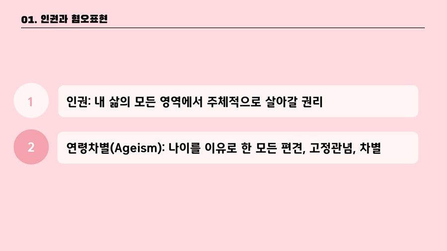
.jpg) 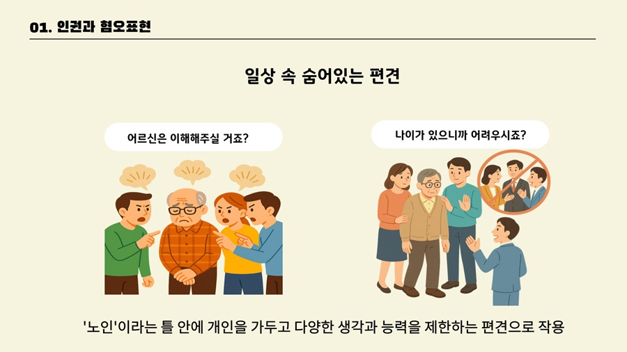
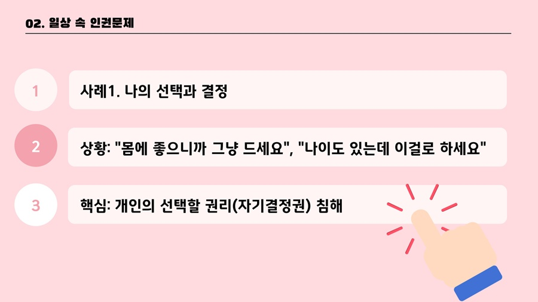
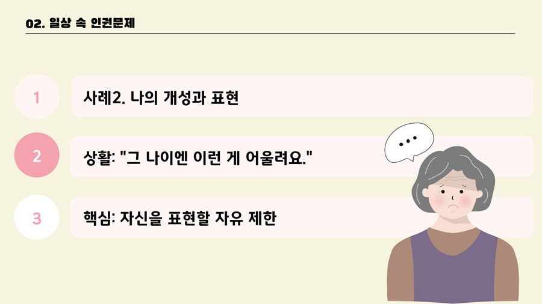
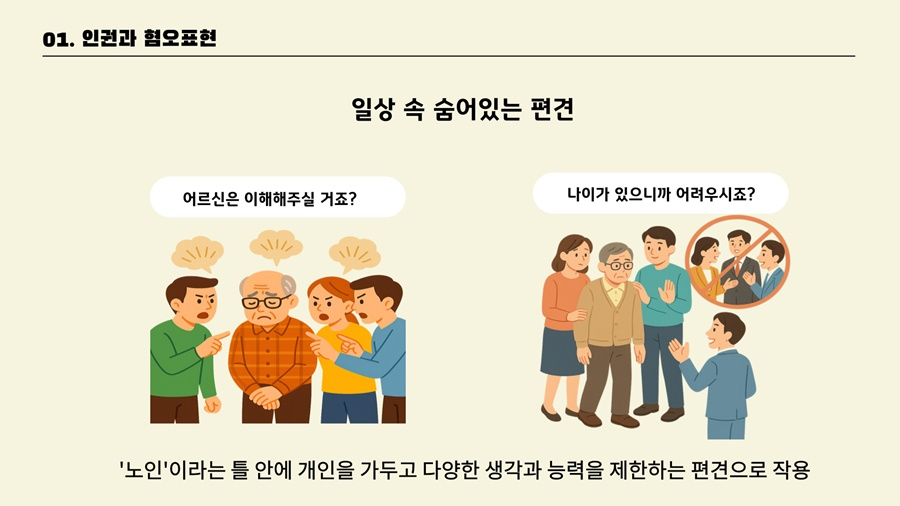
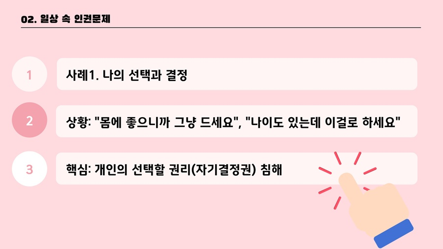
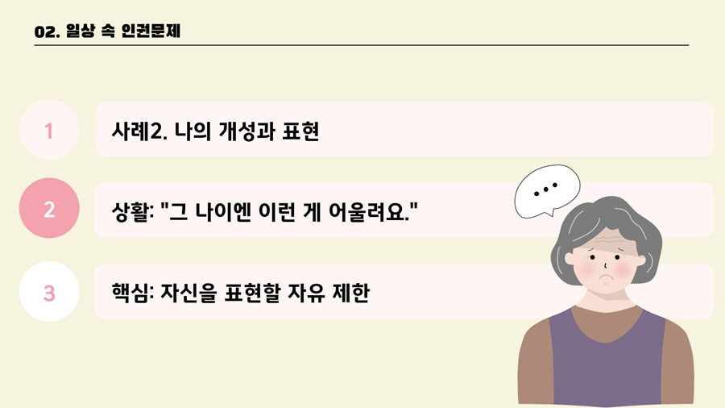
.jpg)
.jpg)
.jpg) 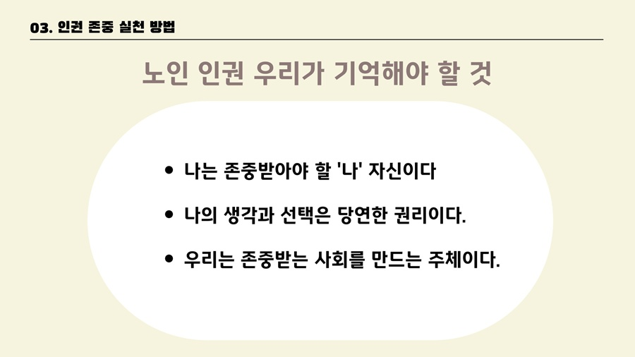
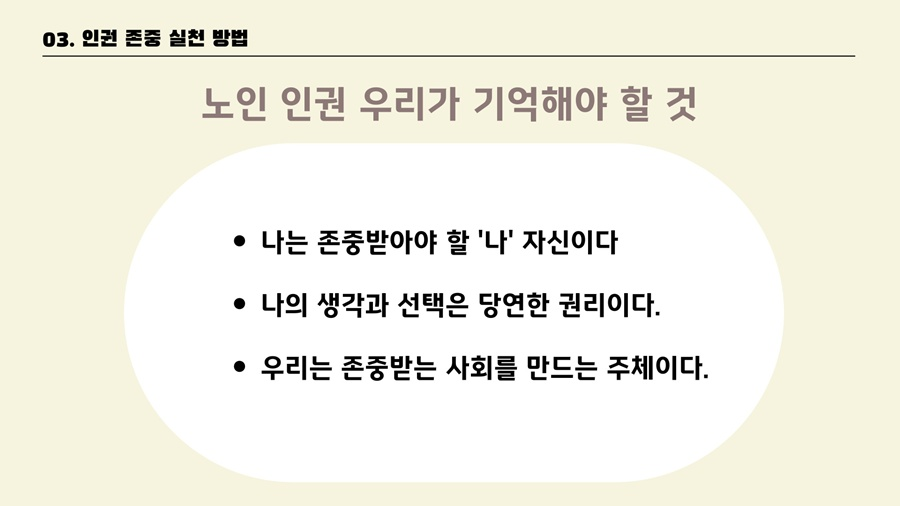
.jpg)
노인학대 유형·징후·대응 및 신고 안내 자료입니다. (썸네일 클릭 → 확대 / 확대 화면에서 화살표 또는 이미지 클릭으로 다음)
.jpg) 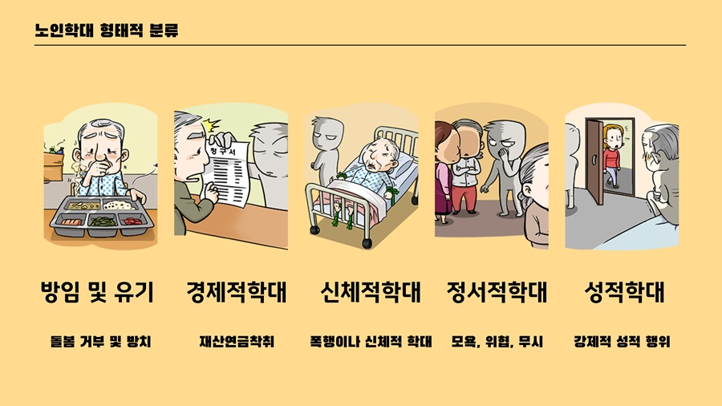
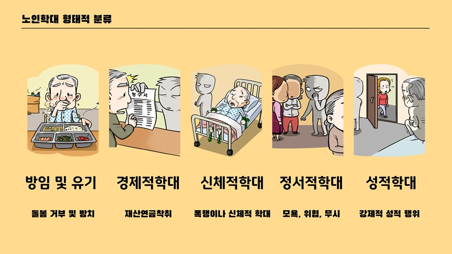
.jpg) 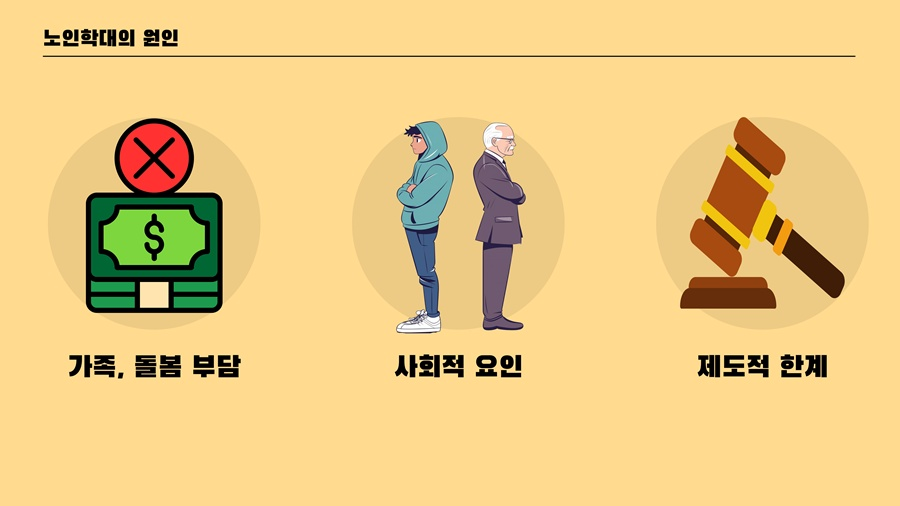
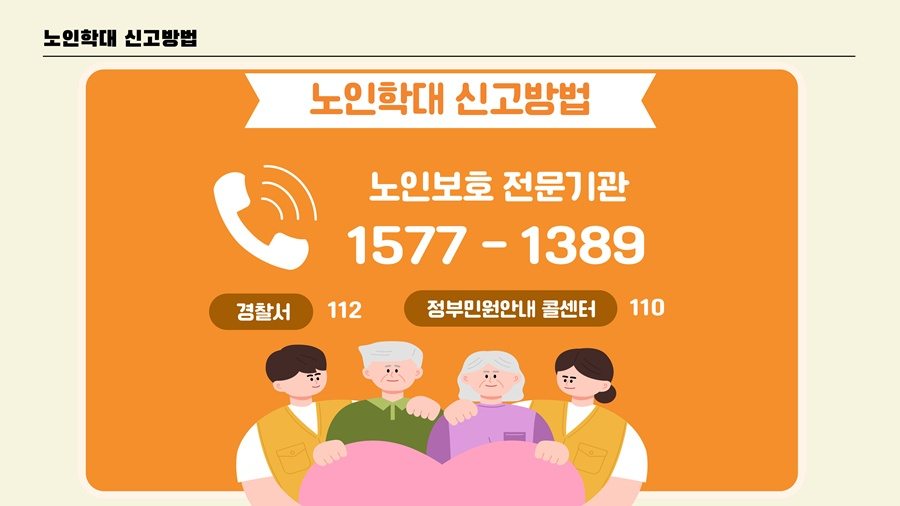
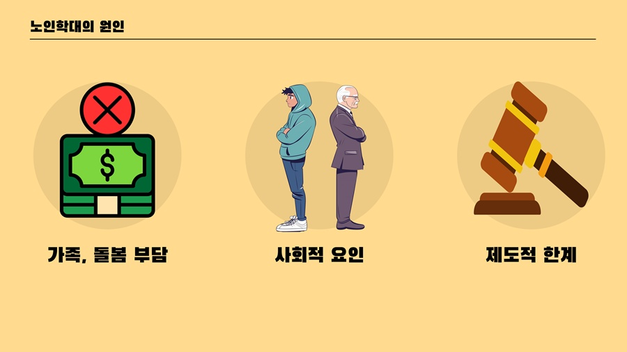
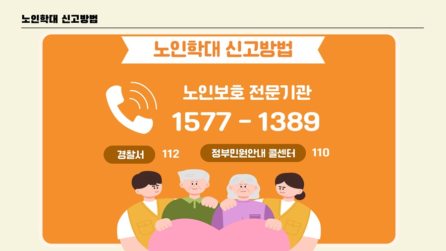